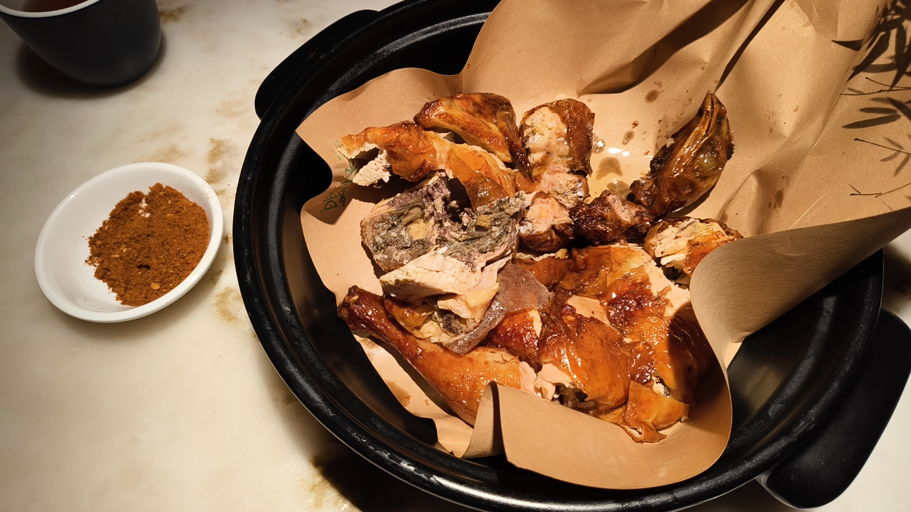
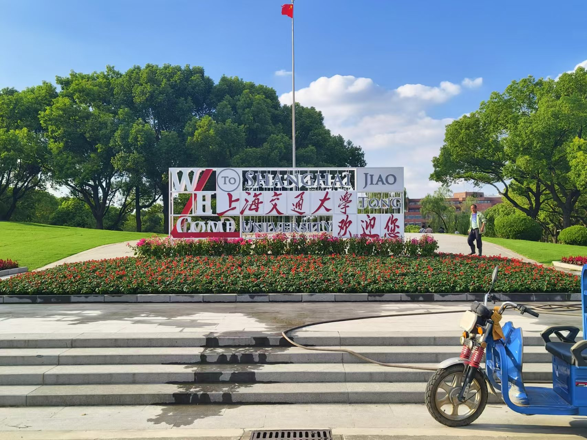
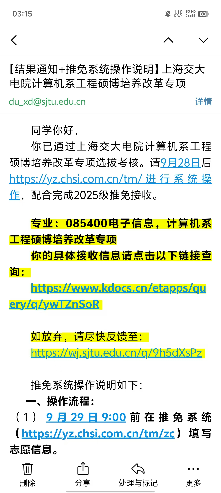
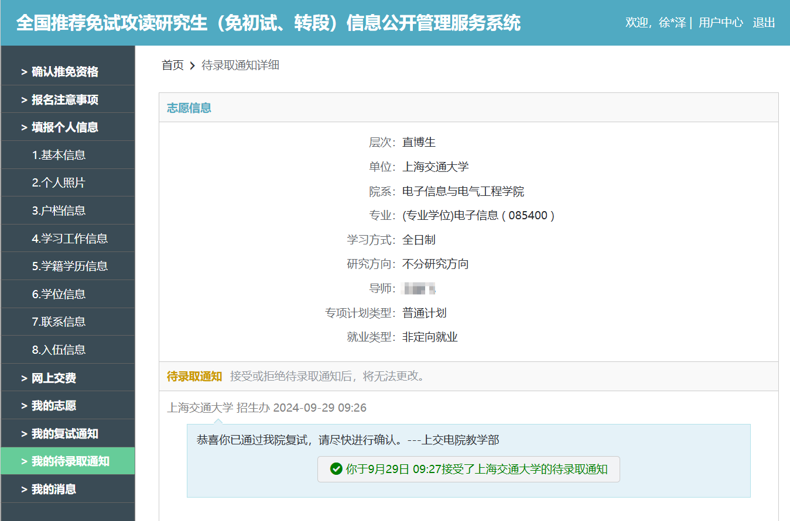

序
据说写任何轻小说的第一句话是最困难的，但现在这对我已不成问题啦。
但是，我觉得接下来的句子──第三句，第六句，第十句…… 一直到人生的最后一句 ─ ─ 对我来说都是同等困难。
我写这几篇博客的目的，从来不是去教导什么、更不是去炫耀什么。— — 我深知人外有人天外有天的道理，也深知自己不过是 2024 年诸多保研学子中的普普通通的一员。每位保研都有属于自己的故事，我无法代表这个群体。
但我同时也坚信，不论是保研、考研还是出国人，都面对过、在面对、或将面对那些万籁俱寂的日月，面对那些改变人生航迹的瞬间。身为舟中一芥的我们，是否从这短暂的岁月中学得了什么、是否共享了一些处世之道？
因此，我选择将我保研的经历分享出来，尝试拨动我们共有的情感，或者让那些毫不逊于为我们的后辈从我的经历中汲取一些东西。衷心希望看到博客的你们，可以在自己所热爱的道路上越走越远。
第八章 终末、决心、寻航向
一
九月二十号，龟踏上了将决定其命运的旅程，去宁波参加浙江大学软件学院的机试与面试。
当时台风“普拉桑”本来说要抵达宁波的，结果台风“有丝分裂”了，一支去了北京、一支去了上海。结果龟刚好在北京台风不大的时候连夜逃离，到达宁波只下了毛毛小雨，非常惬意。
宁波面试的校区也是浙江大学软件学院的新校区，好像是原来的一个大专改过来的 大专校园都比北邮漂亮，学校内甚至有一个宾馆，当时订酒店的时候有些晚了，只剩下了双人房。龟是个懒比，宁可多加几十块钱也要图个方便，最终于 20 号下午成功入驻，点了外卖后就开始机试的最终复习阶段。
说是最终复习，但实在是不知道看啥了，就翻了翻之前的错题，背了几个板子 最后一个没用上，就直接上阵杀敌去了。
浙软夏令营就是海王营，没想到预推免还是海王营。五百多个人乌泱泱地挤在机试的楼前，密密麻麻地压迫着龟的心脏。龟没一会儿找到了考场和座位，看着屏幕上陌生又熟悉的 Dev C++，做个深呼吸，开始了他信竞生涯的最后一战 — — 浙软杯。
开题。第一题是个签到题，一分钟杀了。
第二题是个裸的 DP，五分钟杀了。
第三题想了想，感觉搜索或者 DP 都能做，最后敲了个 DP，十分钟杀了。
龟看了眼表，总共三小时的考试时间，才过了二十分钟不到。机试一共四题，龟已经切了三题了。
我去，不会要提前下班了吧！
抱着这样的想法，龟打开了第四题。题意很简单，给定一个 01 矩阵，求得其中最大的、由 1 组成的正方形面积。龟隐隐约约觉得这题应该也是道 DP，但前面两题已经是 DP，而且作为压轴的情况下，龟觉得事情没有那么简单。
于是龟开始尝试用广搜的思想解题。最后推出了一个很复杂的搜索转移和剪枝策略，此时已经过去了半小时。龟打开成绩列表一看，已经有五十多号人通过此题了。龟此时觉得这题应该难度也不大，不然以龟的思路来看，代码都不可能在这么短时间内敲完。
但是龟抱着 “来都来了” 的态度，决定还是先敲一版搜索的出来混点分，再去想其他正解。于是敲啊敲，又花了二十分钟 DeBug，此时考试已经过去一半时间了。龟点击了提交。
……代码没过，还有四个测试点是错的。
还好，毕竟有分了。龟这样想着，决定再试试优化一下剪枝策略，看看能不能把最后几个 MLE 的测试点给过了。结果调了半天也没调出啥结果来。
何意啊？何意啊？何意啊？龟开始有些急躁了，不耐烦地狂击鼠标，结果意想不到的事情发生了：电脑卡在程序运行的时候不动，死机了。
何意啊？龟大气不敢喘一个，招手喊监考的学姐来看看情况。学姐说你要不重启一下，我说我代码还在本地呢。学姐让我别担心，代码在你提交上去时都有备份了，点开你的提交记录就能找到。
我半信半疑地重启了电脑，发现我根本无法打开我的提交记录。
好嘛，这下敲了一小时的代码白敲了。
我直接和那个学姐爆了，质问她现在怎么办吧。她也有点急了，连忙在群里摇了几个学长过来帮忙。有学长想通过 F12 大法调出我提交记录的 ID，然后直接访问该记录，结果发现用户对自己提交记录是没有访问权限的。我心想这是哪个同学写出来的 OJ 系统，能不能把这个人的软工成绩算零分啊？
当然，也不能真就爆了，我还要调代码呢。于是学姐又去摇其他人，我趁此机会写了个暴力打算对拍，结果暴力提交上去前面有几个点 WA 了，何意啊？
我反复检查暴力是否有问题，反正我没看出来。大眼瞪小眼看了会儿，又来个学长直接登录了 root 账号，把我的代码给囊出来了。这事儿又浪费了我半小时。这件事这么一折腾，龟已经完全忘记之前还要写正解的想法了。
他一边困惑于暴力都能 WA 的奇妙，一边还在折腾那份肯定不是正解的搜索剪枝代码，就这么混到了考试结束。出了考场一看，这题果然就是一个裸 DP。
出了考场一看，一共500人考试，满分130人，龟排在165名。
此时，龟心里只有两个字：失败。
纯纯的失败，一道只有普及-的入门DP题，龟居然没做出来。
龟的信竞生涯，最终被划上了一个泪淋淋的问号。
二
浙软杯这场耻辱性的大败已成为龟玉玉的重大话题，只能说幸好分数只占 15%，还有补救的空间，只要面试表现好一点就没问题。龟抖擞抖擞精神，觉得不能让消极的情绪支配自己太久，于是打算第二天去杭州找盛婶玩儿。
浙软这个校区有一点好，距离地铁站只有五分钟脚程，到高铁站也就半小时不到，非常方便。坐上高铁一共两个半小时，到达了浙江大学玉泉校区。

好久没见着盛婶，感觉已经被他的导压榨了不少，变得更沉稳了。杭州下着小雨，他把我带去他的宿舍坐了会儿。不愧是八所Top3的高校之一，即便是老校区依然是独立卫浴的四人间。盛婶给我展示起他的 Steam 游戏库，没想到你个浓眉大眼的家伙居然也知道 Steam 了，令人感慨。
看他打了会儿游戏，龟拉着他去逛了逛浙大校园，远远眺望了一下图书馆，看了看那个时代共有的毛主席像。玉泉校区说是老校区，气氛上和北邮西土城校区差不多，都挺沉闷的（也可能是下雨的缘故）。感觉不管哪个学校，都是把刚入学的小登骗到新校区快活两年，再丢到老校区去闷臭。
由于龟买的高铁票比较早，盛婶就直接拉着龟去干饭了。你还真别说，除去西湖醋鱼之外，杭菜还挺好吃的，看了看北京也有连锁，之后找个机会和饭群的人一起去吃。
在龟的软磨硬泡下，盛婶终于分享了他的保研经历：放弃香港之后，他便在西湖大学联系了一个导师，暑假在那儿进组实习。盛婶认为那个老师有一些科研资源，但做的工作都是一些“绣花功夫”，没有什么实际应用场景。
此外，盛婶之后的发展方向是找个大厂赚大钱，而这个老师手下的几个学生最后出来都是去找了教职，和自己的发展方向也不符。
龟不自觉地联想起浙大张老师。“既然不是最满意的结果了，那还是有机会联系其他老师的吧。” “千万不要以为跟着实习两个月就要绑定五年了，既然是直博，就一定要选择最合适的导师。” 如此如此，龟对着盛婶一通嘴炮，他表示会再去看看别的老师。
盛婶也建议龟再跟张老师聊聊自己的顾虑。如果想读博的话，他手里还有没有名额？出国读博有没有 connection？学生去向如何？弄清楚这些问题再决定去不去张老师那里读书。龟觉得说的在理。
干完饭之后，盛婶打道回府、龟去高铁站，两人坐着不同的地铁行驶下去。
下一次，地铁站的交点又会在哪里呢？

三
回到宾馆也没啥事儿干，玩杀戮尖塔。突然收到了交大的预推免面试通知，时间在9月24号。好嘛，这下离开浙软后直接交大启动了。
晚上找机会跟张老师通了微信电话，想询问读博和实习的事情。有关读博，老师的回答是：我这里没名额，想读博硕士先发个三篇 paper 上国外读去；有关实习，张老师怼我道：你不会问师兄吗？我寻思每个师兄去向不同，我直接问你不是可以从整体上了解一下吗。之后又怼我说这些东西怎么不早问，我寻思这些东西是不是你应该在我科研实习之前就跟我讲呢。
当然以上话龟放在心里的，都没有说出口。之后张老师又开始对龟进行了谆谆教诲，表示你这个代码能力有待提升，保研结束后要立刻进组实习提高科研水平；你已经耽误了太多时间了，浙计的学生现在都已经发 paper 了云云，还有其他诸如此类的 PUA 的话。
现在想想，可能也不怪张老师。张老师觉得这些东西对于学生来说也是一种培养，殊不知学生觉得这些 PUA 的话语在这个特殊时间段下极大加重了其心理负担。只能说龟的性格和张老师确实合不来。
第二天早上九点起床，随手翻了翻简历和项目材料，把英语自我介绍背了背，就起身退房去面试了。我十一点半到了面试地点，一直在门口等到下午两点才终于轮到我。走进房间迎面五个老师，感觉都挺年轻的。
面试过程其实可以说的不多，一开始用英文做了自我介绍、再用中文把几个项目的细节详细地讲了讲。并且听从张老师的建议，强调自己 “已经进组实习了”。浙大老师果然对自己学校老师的科研更感兴趣，一直在问我张老师科研项目。感觉回答得还不错。
然后到了专业题目问答环节，老师看我简历上数据结构的成绩最高，直接问我什么是 B+ 树。然而我们数据结构课上没讲过 B+ 树，龟曾经自己看王道 408 扫过两眼，但一时间记不起来了；然后老师又问了问红黑树是什么数据结构，回答道是一种平衡二叉搜索树，每个节点都包含一个颜色（红色或黑色），并通过一系列旋转规则来保持树的平衡。老师还问了什么是正定矩阵，这个也是课上没学，课下自己看过概念，答完概念之后往深处问了点就不会了。
老师看我没活儿，甩甩手放我走人了。考完试我给张老师发微信，张老师回复道：“推免出结果后 如一切顺利 请务必all in 科研下不为例。” 一句鼓励或安慰的话都没有，龟回想起这两个月在张老师课题组的实习经历，似乎从来没有觉得开心过。这更让我坚定了我的想法：不论之后拿到怎样的 offer、不管之后浙软要不要我，我都要把张老师拒了。
有一瞬间，龟仿佛触碰到了天边的云，倏而坠入谷底了。
四
斗转星移，日月变换。龟将天气预报从宁波切换至上海。龟在小时候曾来过上海两次，都是来旅游。这所城市、这所城市的人、这所城市的大学，仍停留在电视和他人的口中，我自己从未感知过。
我穿梭于这所由刻板印象搭建起的城市中，寻到了那所儿时幻想过的大学。当年懵懂无知的年代，身边的人都在纠结去清华还是去北大，只有小小龟有一个坚定的目标：我要去上海交通大学读书。不为别的，龟觉得那位长者曾经去过的大学、上海市的最高学府（复旦？不存在的）一定很酷。
当然，现实还是很现实的。龟高考一坨，最后去了一个在报考志愿前都不曾了解过的学校。几个月前的夏令营活动中，龟甚至也未能入营。这都为此时此刻蜗居在上海宾馆角落的龟披上一层朦胧感。
交大刘老师在这段时间里也一直在鼓励龟。刘老师跟龟说最后推荐人选时他往 pjlab 强推了下龟，只要龟的面试能够发挥顺利的话，问题就不大。但还是跟龟强调 “要好好准备面试，今年的竞争非常激烈，不要掉以轻心”。
龟也明白，这或许是最后的机遇了。但龟还是抱有一颗平常心，毕竟太紧张导致发挥失常就没有任何意义了。一切都是缘，缘分到了就有了。
龟 22 号晚上到达上海，当晚在牌群打了会儿牌。23 号联系了高中隔壁班一个考到交大的沈同学，逛了逛交大的闵行校区。
从北邮来的龟进了交大，仿佛刘姥姥进了大观园：这也太大了吧！校区整体分成了东西两侧，有十几个食堂，五个大大小小的体育馆和操场，还划分出若干个生活区。电院作为交大最大的院系之一，整整齐齐坐落了五栋楼，旁水而建，十分雅致。
沈同学也为交大的一员感到十分自豪。他之前曾是交大戏剧社的社长，目前正在沉淀考研。他跟龟介绍自己社团的时候两眼都在放光，十分浪漫。
漫步在交大的校园里，龟仿佛徜徉在梦中一般。阳光透过树荫洒下的碎片、倒影在一泊湖水中的红瓦高楼、下课后熙熙攘攘的食堂与街道，投射在龟内心深处的一片小小净土之中。
吃完晚饭后，龟回到宿舍继续准备面试，尤其是英语面试的部分。龟隐隐约约地感知到某种既视感（deja vu），明明是之前没有准备过的英文 QA，但龟仿佛已经在过去的某些时刻思考过这些问题了，非常奇妙。
龟躺在床上，望着陌生的天花板。
龟对明天的面试感到些许恐惧、却又十分兴奋。
龟知道，“底层逻辑没变的，机会是对勇敢者的馈赠。”
于是，龟陷入了梦乡。

五
早上九点多的时候，龟退了房，动身来到了面试地点。
墙上贴着一张纸，是随机打乱过的面试顺序表，龟赫然排在第一个。这下好了，可以改签提前回京了。
龟在等候室等到九点十分，评审老师陆陆续续都来齐了。龟听见屋里边儿负责招生的老师向评审老师介绍说，一共有 30 个人报名预推免，从其中招收 23 名同学。这么一想，感觉龟上岸的概率还挺大的，信心又增添了一分。
招生老师示意龟进了面试间，线下有八位评审老师，线上还有三位的样子。龟深吸一口气，开始做自我介绍。做过多次自我介绍的龟已经熟稔于心了，没有啥大问题。结果做完自我介绍之后，面试间突然陷入了可怕的沉默。
安静了几秒钟后，一个老师先开口发问：“你觉得做科研最珍贵的品质是什么？” 龟回答道：“我觉得是我的自驱力以及学习能力。我的专业并非是人工智能，但我在课余时间时自学了大量课程，掌握了专业的基础知识。我相信这两个能力也会帮助我在科研中发现值得探究的课题。”
之后又有老师问道：“那你为什么选择读博？” 龟回答道：“我从初中就开始接触信息学竞赛，从那时起便对算法和人工智能抱有浓厚兴趣了，也想在此基础上做一些研究。我的父母都是老师，他们也很支持我读博的想法。”
老师指着我简历上的教育经历，问道：“你这个 QMUL 联培是什么意思？” 龟回答道：“相当于英方那边每个月会派老师来，线下用英文为我们授课，所以也锻炼了我的英语能力。” 结果碰上了组合拳，另一个老师抢着说：“那你用英文介绍一下你在这个项目里做的贡献吧。” 龟其实都准备过，但当时脑子突然短路，只是概括地说了很少内容。说完之后被老师质疑道，“That’s it?”
以上就是一些印象比较深刻的问题了，线下来的老师都是非常年轻的老师，完全没有拷打龟的专业课，所以整体来看，龟的面试还是挺流畅的。
当然，例行环节不能少。在线上旁听的老师听上去像是老登，问了龟那个经典咏流传的问题：“你这个专业是电子商务，跨学科来到我们院，你的代码储备够吗？你学过什么语言吗？” 龟释怀地笑了笑，正想开口，一位评审老师突然替龟解释道：“老师您好，这位学生线下给了他的简历，您那里可能看不到。这份简历上写着这位学生确实选修了许多计算机相关课程，我认为他的专业水平是没问题的。”
龟被感动到了，但还是礼貌地做了纠正：“那些课不是选修，而是必修课程。” 结果定睛一看，好家伙，这不是我导刘老师吗？回想起来，率先打破那份宁静的老师也是刘老师。龟再一次被刘老师对学生温柔的态度打动了。
面试结束后，龟也不太方便感谢刘老师，于是匆匆去赶回京的高铁。在高铁上，龟给刘老师发了微信，对上午的面试表达了感谢，没想到刘老师一个电话就打过来了。电话内容大概就是，刘老师觉得龟上午发挥得不错，给我打了一个很高的分数。他觉得龟应该问题不大。如果龟也确定了去交大，就可以考虑把 Plan A 给释放了。龟再次深深地向刘老师表达了由衷的感谢。
回京的高铁上，龟在保研几个月以来第一次感受到体内正在释放幸福的多巴胺，一切仿佛都要好起来了。

终章 于是，新的乐章即将奏响。
一
回到北京的龟直接找饭群各位来外头狠狠搓了一顿，龟分享了在浙大交大的一些见闻，表示交大漫社是米哈游的重要合作伙伴。饭群大伙表示我们檐枫动漫社的前社长也是米哈游驻北邮的校园大使，那感觉无敌了啊。
第二天（9.25）上午，龟参加了北邮AI院李老师课题组的面试，简直不要太爽，问的问题全正中龟的好球区。一开始问了几个政治问题，如怎么防护电信诈骗，回答要远离湖北孝昌县人；之后做英文自我介绍，龟直接洋洋洒洒讲了五分钟；再之后介绍项目，老师问现有的PEFT方法有什么问题、如何解决，龟直接开讲他在浙大的一个知识编辑项目。后来李老师告诉龟，北邮预推免已经是等额选举了，不用太担心录不上的问题。但最后一次面试发挥得很好，还是让龟很自豪，有一种 “过去几个月的付出果然没有白费” 的感觉。
快中午的时候，龟收到了浙大软件学院发来的 offer，一共接收170名同学，龟的排名比较靠后，算是有惊无险。但也无所谓其实，龟花了 20 分钟的时间，洋洋洒洒地写了一封拒信，直接给浙大张老师发了过去。
要说完全不舍得也是假的。直至今日，龟仍然觉得张老师是一个很有科研水平和科研品味的老师，但龟觉得如果真去了张老师的课题组，龟不会感到幸福。只能说龟做出这个决定并不后悔。以下是龟给张老师发出的鸽信：
张老师您好，
我已收到浙软 offer，非常感谢张老师这几个月以来对我的培养。这段时间跟您做项目、旁听组会，深感您是一位杰出的科研工作者，您的科研品味和科研态度也令我十分尊敬。但在这几个月的实习经历中，我深感我的能力没能达到您的期待，我的性格也不适合贵实验室的氛围。并且我认为专硕可能也不适合将来的深造。因此在和我的父母商量之后，我还是决定放弃浙软 offer。
非常感谢您一直以来的悉心指导与支持，希望您的理解与祝福。我认为您是一位颇具科研水平的导师，对于您曾经对我提出的任何建议和忠告，我都会在未来的学习生涯中谨记于心，谢谢。
晚上又去了新开的一家谷子店，买了国内罕见的多娜多娜的官方周边。之前玩游戏都提心吊胆的，好久没有玩的这么开心过了。
9.26 中午，龟被拉进了北邮李老师的课题组，看到实验室良好的氛围，龟再次感叹，如果最后还是留在北邮，龟也会度过一个非常珍贵的直博生涯。尽管李老师的实验室客观上来说确实难以做出成果，但龟至少可以好好享受在北邮读书的时光。在龟高考失利的时候，是北邮国院收留了无处安身的龟，龟去了哪儿都不会忘记这份恩情。
9.27 上午 10:24，龟收到了来自上海交大电院法拉的工程硕博联培专硕：

拿到 offer 后，龟兴奋了一瞬间，随后便陷入了大焦虑：应该怎样才能礼貌地鸽了李老师的直博 offer 呢？李老师人太好了，导致鸽的时候龟背负了过于沉重的负罪感。龟从上午十点一直想到下午两点，最后决定还是亲自去办公室一趟，把话跟李老师说清楚。
发微信确定李老师在办公室后，龟再次气喘吁吁地奔赴创新楼。把情况和李老师说明后，肉眼可见地看到李老师确实很难办。但她也承认交大对于龟来讲会有更大的发展空间，因此对龟的决定表示理解。
下午的时候龟还去考了一个课程小测，45分钟的卷子15分钟写完交卷，又去找饭群出去吃饭了，感觉无敌了啊。
二
9.28，令无数保研人魂牵梦萦的日子。但是今年规则改了，928 填报系统，929 正式录取。龟直接 all in 交大电院，释放了最后的软件所 offer（之所以没提到过，是因为这个 offer 有点过于随便了，本来就没打算去）。
结果被软件所的老师狠狠地辱骂一通，表示在我们这个方向，交大根本没有我们厉害。龟寻思我也没说去交大还干你们这个方向啊。
于是，9.29，龟于九点守候在电脑前，望着绿群的春晚倒计时，感到某种强烈的情感此时此刻终于要厚积薄发了。
最终，龟在 9:27 分接受了来自上海交大的预录取通知，成功上岸了。

虽说龟接受任何学校的任何 offer，但应该不会有其他 offer 能让龟更加满意了。大学三年的努力终究换来了令人欣慰的结果，龟在保研的几个月里的焦虑、纠结与痛苦，此时此刻全部置换为等价的喜悦、激动与释然。
当然，欣喜之余，龟仍感受到了不小的压力。龟深知自己的能力与交大本科爷、复旦本科爷、北邮计院和 AI 院的爷们相比还有很大的相当大的差距。但正如龟一直所坚信的，努力会弥补天赋的鸿沟。
不要自我感动，不要自我猜疑，不要自我内耗，不要传播焦虑。
这或许就是龟保研之路上的终点了，但这是龟生新的一段旅途的起点。这条道路必将坎坷，对于龟这样的生物来说可能会成倍的坎坷。龟或许还要在将来的生活中玉玉很多次，流泪很多次，彷徨很多次。但还有这么多的支持龟的人，将来还会有更多支持龟的人。这样一想，就有更多地方倒情绪垃圾了（？
电脑屏幕闪烁的荧光弥漫在整个寝室，开始西斜的夕阳照进室内。
秋天和蔼的向阳之处孕育而生。那抹温暖却让我脊背微凉，打个寒颤。
恍然大悟，这就是金色的秋天——我再次深切体会到，新的季节已然而至。
啊啊，果然——
除此之外，再也没有其他说法。
——我的青春保研物语一定有问题。
全文 完